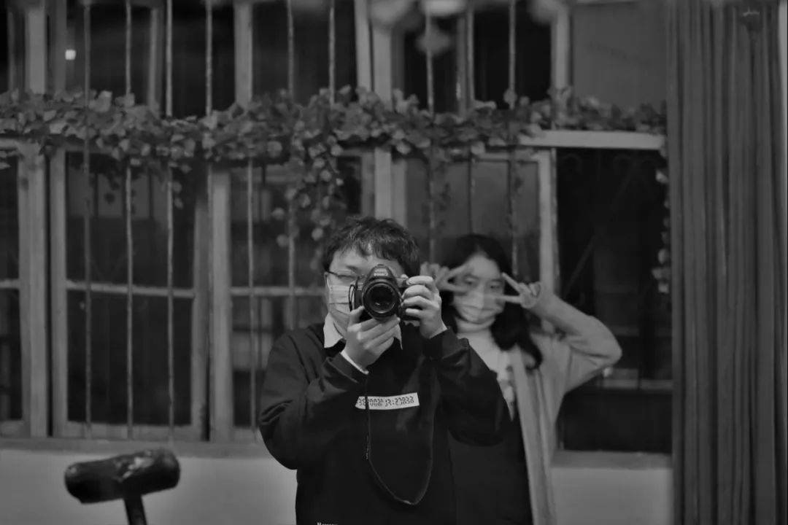
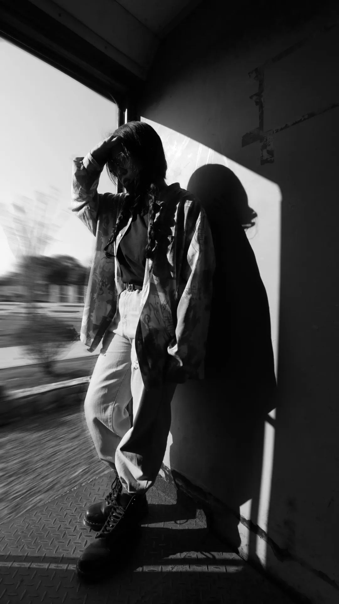
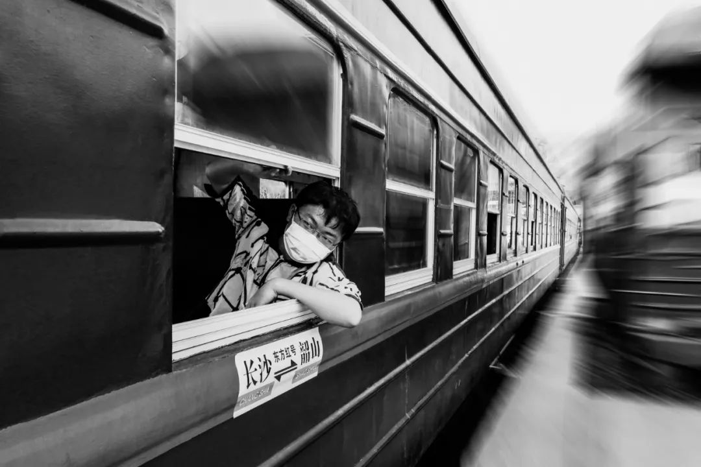
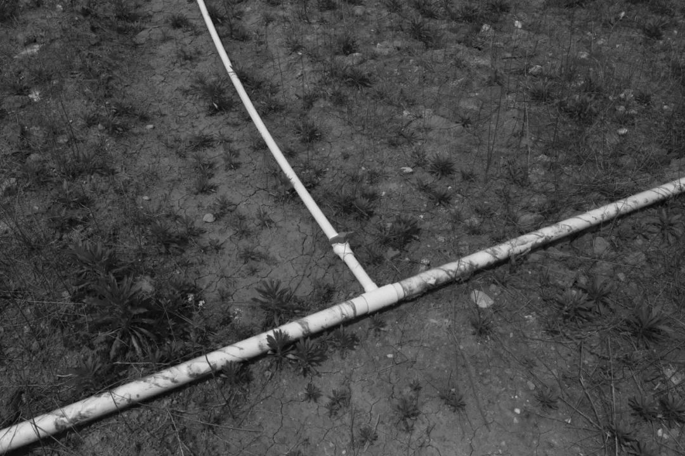
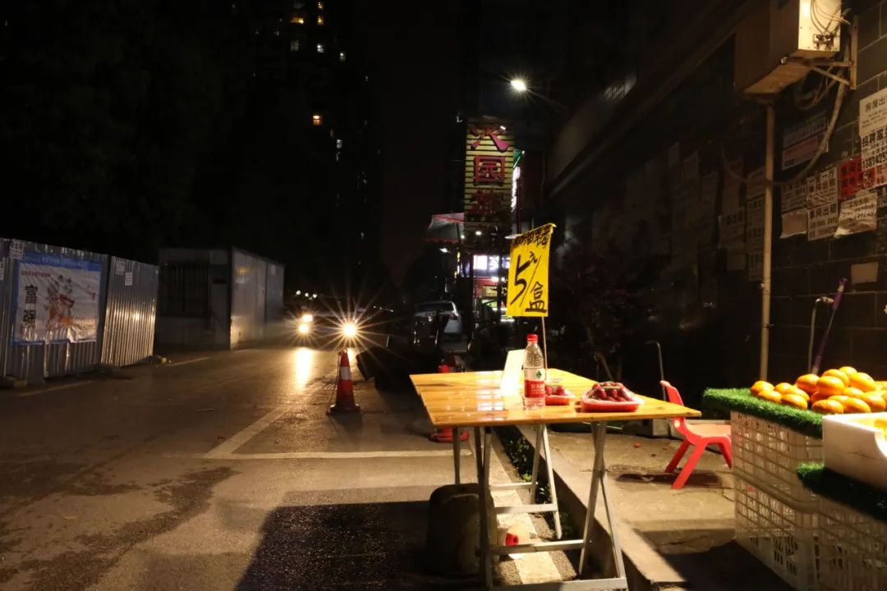

有多少的黄昏你会感到悲伤，有多少次在公交车上你故意越过目的地的那一站再下车。也有很多次，我想我要不要公开这些脑子里的怪东西。后来一想，同频几乎是不可能的事情，也就直接把最危险的想法放在了最安全的地方。
你们之中的很多人觉得，“我请你吃饭”是一句可以兑现的客套话，但饭搭子在我 可能是为数很多的困难事情之一。有时候我可以越过湘江、越过长江，为了吃而跑到城市的那一头；有时候，我并不是那么在意要吃什么。不是只有米饭，才叫做好饭。
也许今天我们适合去居酒屋，但饮料是旁边店买的茶颜；也许晚上我扫了扫外卖的商家，备注：要一份汤面不要面。它们可能和今天的天气有不小的关联，也许又在高维空间的最深处养了一只猫。
[交往中] 恋爱这种事就是两情相悦啊，没有谁配不配得上谁，爱本来是是超越于一切阶级和维度的东西街边卖棉花糖的大爷，每天都拿着根竹签在那卷啊卷，不知道成为了多少小孩子心目中具有魔法力量的爷爷，在空空的锅里绕出那么大一团糖棉花来。昨天我绕着路走了这块地方，但是今天我摘了眼镜一头栽进了棉花里。
截取的这部电影，来自《Her》，2013年。我在看赛博朋克电影的期刊评论时候，看到风评很好于是有准备来看。意外地发现和今天我想说的，有我也想表达的。Joker的主演总是参演一些我很喜欢的电影，按下不表。
这是一点Amy在给Theodore和Charles看自己拍的一些素材。我把前后相关的部分剪在了这一起：其实如果知道了这是什么，那也就知道了这是什么。我没有在故意打哑谜，因为一些想法如果没有从自己的脑子里冒出来，我也不会自恃有多高的笔力和情绪渲染/架构能力，让所有人都能沉浸到我想说的世界里边去。
每当春天到来的时候，我就想去放风筝。也不止是想要放风筝，我想去放飞风筝。宗教里总有一些稀奇古怪的规定，我就偏喜欢直接把风筝放到把我的线都扯走然后飞走了我再也看不到。
我知道我坐公交车的时候去我的目的地，当然到该去的那一站比坐过或者还不到站更近。但我就是什么时候要多坐一站或者少坐一站。也没有很大差别，一站路，又不是腿脚不利索走走就到了。我知道放飞了风筝也许会掉到什么地方污染环境，也许挂在了树枝上割了一团油脂，但是我觉得它离开线的时候真的很自由。这种想法很浅薄，好在危害程度没那么大，而且只会一年一度甚至有些年份也没有。
朋友有问我为什么要去放风筝。当然我可以举出一些，意义，正如我们在很多时候没话找话但依然可以滔滔不绝的那时候。但这次可以坦诚一点，我就是想去放风筝了，而不用扯一些春天、颈椎之类并不是我想表达的东西。可以坦诚并不意味着，这是易于接受的。
人们不仅对真实的世界一无所知，对虚拟社群网络也自以为摸到了很多边边角角。
和Caesar在圭塘河和浏阳河交汇的地方，把风筝放上天又看着没风了然后掉下来。是浏阳河沿线看到的第一支飞上天的风筝，但是掉到了圭塘河里。我又把风筝放起来。这一天的风不够大，风筝放不飞。
湘江中路。钓鱼的人在等于上钩，我在等钓鱼的人有鱼上钩。这思维难度约莫等同狼人杀里丘比特的烧脑。但是这天很幸运地就拍到了。

Helen也说要过来，但是到城中心之后发现广场上连红旗都不能总保持飞扬，于是改作约拍。于海信广场超级文和友，长沙城市景观复原

阴天就阴天，下雨就下雨。可是为什么一到了阴天和下雨，人们就会说『天气不好』那阴天和下雨该多不开心呢？
阴天的云朵相较于晴天会更有层次，雨天的采光则是渲染很多情绪的视听环噪。我说这些不是凸显阴天下雨怎么能在人们心目中变好。而是我觉得，晴雨冰霜雪雷电，每一种自然现象都是应该被接纳的自然。适应不了雨天的室外球场，是因为芭蕉叶才是雨天的打开方式；讨厌雷电天气会把人从梦中吵醒，我们是不是可以听听内心的那些震动。遇到的事，我希望是可以接纳和理解的，尽管不一定把这变成『我喜欢』，但一定不要说『这不好』其实不同的情绪，也是一样的道理。不同的取向，也是一样的道理。不同的人生轨迹、生活方式，亦然
在长沙扫街有想读一些文献，也许这样和跟着小红书/图虫/视觉中国/大众点评之类的走，会大不一样


也许会出一篇专门关于绿皮开窗火车的尬走。但是不要相信太多，上篇的评论区和Lotus说这期的名字叫『色彩交通事故』但正如所见并不是这样
正如我觉得这次拍的最出色的这张图，就会很多次地回看这张图也回修。决定每天该吃什么，要去玩什么，本也是完全由着自己去选择，有同伴的话就和同伴商量。修图，到更自我的设计，就又成了一件有如日记一样私密的事情了。




可以类比一下"罪犯"和"犯罪嫌疑人"，后者只有由专业法官在经过制度认可的审判之后才能定义为前者，而过程中众智的保障和个人的努力无处不在。但我们不会去定义"英雄嫌疑人"，不会给英勇的心理和行为"量刑"。正能量本来是个很好的词语，我初三就看了那本书。
修图，每天都有层出不穷的设计方案。低层面上每个人都觉得自己是最独特的，久了之后倒也只是一般。林林总总的颜色又有多少意志重迭呢科研的成果每天产出，点开和我相关的标题看了看。虽然我不见得一定知道在做什么，但也无非是立下flag什么不行而又重要。现在我的办法让ta行了新闻的舆论场每日趋同。调取了情绪和多巴胺，人类只不过是俘虏。我今天打开了爬虫的课。在已经通过神经网络项目熟悉了大量Python高级编程实践之后，我知道新但这并不提起我的兴趣
下午我会点两杯茶颜悦色。一杯桂花弄，一杯不知冬。点两杯是我喝完一杯又一杯，不在小事上过分动脑。有愿望的时候，我不必等到什么时候再去做这件事
说开来我觉得很多现行的架构都大有可为。把ta们变得匪夷所思的，往往是人
我又不像饮料那样，贴着这样那样味道的标签。就算是可乐，百事和可口也很多差别啊人生如梦。昨晚做梦我在电梯井里躲仇家。担心楼下的电梯会不会突然升上来把我挤扁，我在想对策你把袜子的里子穿外面，你就是这个宇宙里唯一一个没穿这袜子的人
人类化了多少年才从黑白定影发展到彩色数码，不是让你又回到以前的。素食什么的我不在意，但是来试试彩色的锐利喏